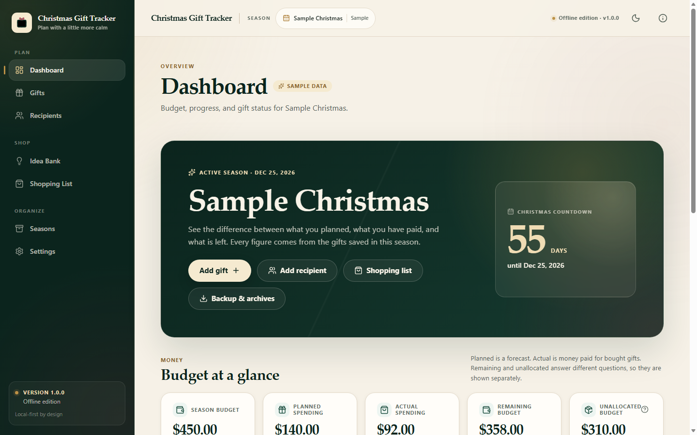

Start here
A calm, local-first planner for gifts, budgets, recipients, and ideas.
Thank you for choosing Christmas Gift Tracker. This short guide gets you from download to your first season in a few minutes. The full User Guide covers every screen, and License and Support explains terms and how to reach the seller.

This is an installable web app. You need an internet connection once to open and save the app. After that, it launches and works without a connection. The app is not opened from the downloaded folder, and it does not run from a file:// address.
| Item | What it is for |
|---|---|
| START-HERE.pdf | This quick-start sheet. |
| User-Guide.pdf | Every feature, data safety, backups, and troubleshooting. |
| License-and-Support.pdf | Your license, privacy summary, support scope, and contact route. |
| Sample-Data/Sample-Backup.json | An optional example season with two recipients, three gifts, and two ideas. Restore it from Seasons & archives > Backup and restore. |
| Offline-Edition/INSTALL.txt | Short install notes you can keep next to the app. |
Seasons, recipients, gifts, ideas, budgets, and notes are stored in this browser’s local database. Clearing site data, resetting the browser profile, or using some cleanup tools can delete the planner. Download a JSON backup regularly from Seasons & archives > Backup and restore. There is no account and no cloud sync in this edition.
Open the Christmas Gift Tracker address supplied with your purchase. Wait until the page finishes loading. The footer changes to “Saved on this device” when the local database is ready.
Optional: after a few seconds, a small banner may say “Ready to work offline.” Choose Got it. This means the app has cached what it needs.
Installing gives the planner its own window and icon. It is optional.
Choose a season name, the Christmas date, and an optional budget. You can also pick a theme and currency. Nothing is created until you submit the form.
To explore first, tick “Load the optional sample season”. The sample is clearly flagged and can be removed later without touching real records.
Add recipients with an optional spending cap, then add gifts with a planned budget and optional store, link, address, and notes. Mark a gift bought when you pay for it; wrapped and sent follow in any order you need.
Use the Idea Bank for possibilities, the Shopping List for what is still unbought, and Seasons & archives for backups and exports.
| Does it need an account? | No. This offline edition has no sign-in, account, or cloud sync. |
|---|---|
| Does it work offline? | Yes, after one online visit and after the app has saved its files. Install is optional but recommended. |
| Where is my data? | In this browser’s local storage on this device. Backups are the portable copy. |
| Can I use it on my phone? | The layout is responsive and tested at 360-390 px. Safari on iPhone/iPad is not yet verified; keep backups if you use it there. |
| Does it convert currency? | No. Currency changes how amounts are displayed; it never converts or rewrites saved values. |
| Can I export to a spreadsheet? | Yes. CSV export is available for the active season or all seasons, with addresses and notes off by default. |
Open the User Guide troubleshooting section first. It covers offline launch problems, storage messages, missing data after switching browsers, and the missing install option. If you still need help, contact the seller through Etsy Messages and include: